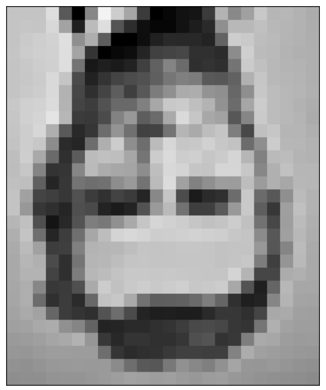
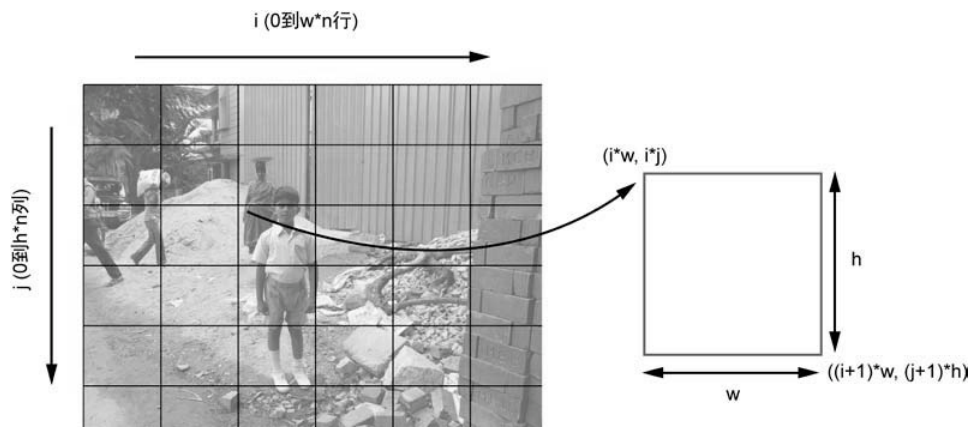
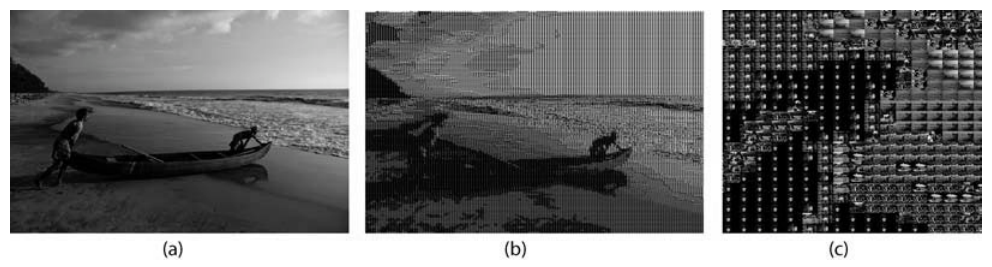
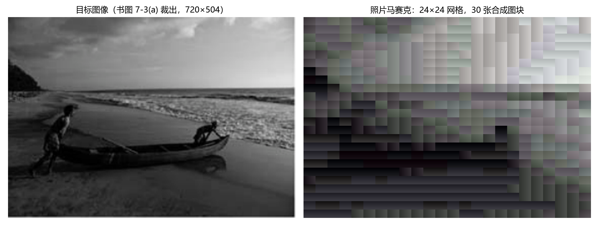

第 7 章 照片马赛克#
本章解决：如何把一张目标图像变成由几百张小图像拼成的照片马赛克（Photomosaic）——把目标图切成 M×N 的小块网格，为每个小块在输入图集里找平均 RGB 最接近的那张图，再按网格贴回一张大图。核心工具是平均 RGB 三元组与三维点距离的线性搜索。 承上启下：本章与第 6 章 ASCII 文本图形是同一思想的两级台阶——上一章把"小块平均亮度 → 查表"替换成文本字符，本章把"小块平均 RGB → 最近匹配"替换成真实小图；PIL 的 crop/new/paste、numpy 求平均、argparse 命令行解析全部沿用，下一章自动立体图还会继续用这套图像处理组合。
📓 章代码：nb/ch07.ipynb（分节代码；ch01–08 含固定种子实跑输出，ch09–14 为完整实现待硬件环境）
作者在六年级时看到一张类似图 7-1 的图像，不太明白它是什么。眯着眼睛看了一阵后终于想通了——把书倒过来，离远一点看。

照片马赛克是一张图像，它被分割成长方形的网格，每个长方形由另一张匹配"目标"的图像替代——目标图像就是最终希望出现在照片马赛克中的图像。从远处看照片马赛克，会看到目标图像；走近了看，它其实由许多较小的图像组成。
这个迷题有解是因为人眼的工作方式。图 7-1 中的低分辨率块状图像，靠近了很难识别；从远处看，看到的细节变少，边缘更光滑，就知道它代表什么。照片马赛克的原理相同：远处看图像正常，走近时秘密揭开——每"块"都是一个独特的图像。
这个项目用 Python 创建照片马赛克：把目标图像划分成较小图像的网格，用适当的图像替换网格中的每一小块。可以指定网格的尺寸，并选择输入图像是否可以重复使用。要从零做到这一点，需要学习如何：
- 用 Python 图像库（PIL）创建图像；
- 计算图像的平均 RGB 值；
- 剪切图像；
- 通过粘贴另一张图像来替代原图像的一部分；
- 利用平均距离测量来比较 RGB 值。
7.0 本章导图#
7.1 工作原理#
创建照片马赛克，从目标图像的块状低分辨率版本开始——高分辨率图像中，小块图像的数量会太大。该图像的分辨率将决定马赛克的维度 M×N（M 是行数，N 是列数）。接着按下面的方法替换原始图像中的每一小块：
- 读入一些小块图像，它们将取代原始图像中的小块；
- 读入目标图像，将它分割成 M×N 的小块网格；
- 对于每个小块，从输入的小块图像中找到最佳匹配；
- 将选择的输入图像安排在 M×N 的网格中，创建最终的照片马赛克。
7.1.1 分割目标图像#
第一步按图 7-2 的方案，把目标图像划分成 M×N 的网格：x 轴表示网格的列，y 轴表示网格的行。

下标为 (i, j) 的小块（i 沿列、j 沿行），左上角坐标为 (iw, jh)，右下角坐标为 ((i+1)*w, (j+1)*h)，其中 w、h 分别是小块的宽度和高度。PIL 用这四个数就能从原图像裁出这个小块。
原书笔误：左上角坐标
原书正文把左上角坐标印成了 (iw, ij)，对照图 7-2 与代码 crop((i*w, j*h, (i+1)*w, (j+1)*h)) 可知应为 (iw, jh)——第二个分量是 jh，不是 ij。
7.1.2 平均颜色值#
图像中每个像素的颜色由红、绿、蓝三个分量表示。这里用 8 位图像，每个分量 8 位，范围 [0, 255]。若图像共有 N 个像素，平均 RGB 计算如下：
请注意，平均 RGB 也是一个三元组，不是标量或一个数字——平均值是针对每个颜色成分分别计算的。计算平均 RGB 是为了匹配图像小块和目标图像。
7.1.3 匹配图像#
对目标图像中的每个小块，需要在用户指定的输入文件夹的图像中找到一幅匹配的图像。判断是否匹配用的就是平均 RGB 值：最接近的匹配，就是平均 RGB 值最接近的图像。
最简单的方法是计算两个 RGB 值之间的距离。把 (r, g, b) 看成三维空间中的点，用几何中的三维点距离公式：
这里计算了点 (r1, g1, b1) 和 (r2, g2, b2) 之间的距离。给定目标图像小块的平均 RGB 值，以及来自输入图像的平均 RGB 值列表，用线性搜索逐个算距离、取最小，就能找到最匹配的图像。（代码实现时会比较距离的平方而不是距离本身——开方是单调运算，不改变谁最近，还能省时间，见 7.3.4 节。）
7.2 所需模块#
| 模块 | 用途 |
|---|---|
| Pillow | 读入图像、访问底层数据、创建和修改图像 |
| numpy | 操作图像数据（转换数组、求平均） |
7.3 代码#
开发顺序：先读入用于创建马赛克的小块图像；然后计算图像的平均 RGB 值，把目标图像分割成图像网格，为小块找到最佳匹配；最后组装图像小块，创建最终的照片马赛克。完整项目代码见 7.4 节。
7.3.1 读入小块图像#
首先从给定文件夹读入输入图像：
# ===== 书 7.3.1 节：读入小块图像 =====
def getImages(imageDir):
"""
given a directory of images, return a list of Images
"""
files = os.listdir(imageDir) # 列出目录中的全部文件
images = []
for file in files:
filePath = os.path.abspath(os.path.join(imageDir, file)) # 拼出完整绝对路径
try:
# explicit load so we don't run into resource crunch
fp = open(filePath, "rb") # 二进制读模式打开文件，取文件句柄
im = Image.open(fp) # 把文件句柄传给 PIL 打开图像
images.append(im)
# force loading the image data from file
im.load() # 强制加载图像数据（open 是惰性操作）
# close the file
fp.close() # 关闭文件句柄，释放系统资源
except:
# skip
print("Invalid image: %s" % (filePath,))
return images
os.listdir() 把 imageDir 目录中的文件放进一个列表，程序迭代遍历列表，把每个文件载入 PIL Image 对象。os.path.abspath() 与 os.path.join() 组合获取图像的完整文件名——这个习语在 Python 中很常用，既保证相对路径（如 \foo\bar）与绝对路径（如 c:\foo\bar\）都能工作，又能跨操作系统（Windows 用 \，Linux 用 /，目录命名惯例不同）。
直接把文件名逐个传给 Image.open() 当然可行，但如果照片马赛克文件夹里有几百张甚至几千张图片，这样做非常消耗资源。替代做法：先用 Python 的 open() 打开文件拿到句柄 fp，把句柄传给 Image.open()；图像加载后立即关闭句柄、释放系统资源。
这里有个关键细节：open() 是一个惰性操作——Image.open() 确定了图像，但并不立即读取全部图像数据，直到真正使用该图像时才会读。所以必须在句柄还开着的时候调用 im.load()，强制把图像数据从文件读进内存，之后 fp.close() 才是安全的。
Python 3 适配：imghdr 模块已在 3.13 移除
完整代码（7.4 节）里还有一个 getImageFilenames()，用标准库 imghdr 判断文件是不是图像：
imghdr 在 Python 3.11 被标记为弃用（Deprecated），Python 3.13 起已彻底移除——import 直接报 ModuleNotFoundError。Python 3.10 及以下仍可用。现代替代：直接用 PIL 试开（Image.open(fp); fp.image_format）捕获异常判断，或用第三方 filetype 库。
7.3.2 计算输入图像的平均颜色值#
读入输入图像后，要计算它们的平均颜色值，以及目标图像每个小块的值。一个方法 getAverageRGB() 两处通用：
# ===== 书 7.3.2 节：计算输入图像的平均颜色值 =====
def getAverageRGB(image):
"""
return the average color value as (r, g, b) for each input image
"""
# get each tile image as a numpy array
im = np.array(image) # PIL Image → numpy 数组
# get the shape of each input image
w, h, d = im.shape # 形状 (w, h, d)：宽、高、深度；RGB 图 d = 3
# get the average RGB value
return tuple(np.average(im.reshape(w*h, d), axis=0)) # 展平成 (w*h, d) 逐通道求平均
np.array(image) 把每个 Image 对象转换为数据数组。返回的 numpy 数组形为 (w, h, d)：w 是图像的宽度，h 是高度，d 是深度——RGB 图像的 3 个单位（对应 R、G、B）。保存 shape 元组后，把数组变形为更方便的形状 (wh, d)：每行一个像素、共 wh 行，每行 3 个颜色分量；np.average(..., axis=0) 沿第 0 轴（跨全部像素）逐列求平均，得到 (r, g, b) 三元组。
拓展：numpy 的 shape 顺序与书里的说法
numpy 对 RGB 图像返回的数组形状其实是 (行数, 列数, 通道数)，即（高、宽、3）——原书把前两维叫 (w, h) 是按"宽、高"口头命名的，与 numpy 的实际顺序正好相反。对 getAverageRGB 毫无影响：reshape(w*h, d) 把全部像素展平，行、列谁在前都一样，逐通道平均的结果不变。tuple(...) 把 numpy 数组转成 Python 元组返回，只是一个不可变的三元组包装。
7.3.3 将目标图像分割成网格#
现在把目标图像分割成 M×N 网格：
# ===== 书 7.3.3 节：将目标图像分割成网格 =====
def splitImage(image, size):
"""
given the image and dimensions (rows, cols), return an m*n list of images
"""
W, H = image.size[0], image.size[1] # 目标图像的宽、高
m, n = size # 网格：m 行、n 列
w, h = int(W/n), int(H/m) # 每个小块的宽、高（整数截断）
# image list
imgs = []
# generate a list of dimensions
for j in range(m): # 外层循环行
for i in range(n): # 内层循环列
# append cropped image
imgs.append(image.crop((i*w, j*h, (i+1)*w, (j+1)*h)))
return imgs
先取目标图像的维度和网格尺寸，再用基本除法算出每个小块的尺寸 w、h（int 截断）。然后迭代遍历网格：外层 j 走行、内层 i 走列，image.crop((i*w, j*h, (i+1)*w, (j+1)*h)) 按左上角坐标和右下角坐标剪裁出图像的一部分（即 7.1.1 节的坐标方案），逐个存入列表。返回的列表按行优先排序——下标 index 对应第 index//n 行、第 index%n 列，7.3.5 节组装时要用这个对应关系。
注意与第 6 章的差异：ch6 的 covertImageToAscii 对最后一行/列做了显式边界校正（x2 = W、y2 = H），这里的 splitImage 没有做——W 不是 n 的整数倍时，最右边和最底下的一条边缘像素进不了任何小块（见"坑与陷阱"）。
7.3.4 寻找小块的最佳匹配#
接下来从输入图像的文件夹中找到小块的最佳匹配。工具方法 getBestMatchIndex()：
# ===== 书 7.3.4 节：寻找小块的最佳匹配 =====
def getBestMatchIndex(input_avg, avgs):
"""
return index of the best image match based on average RGB value distance
"""
# input image average
avg = input_avg # 目标小块的平均 RGB
# get the closest RGB value to input, based on RGB distance
index = 0
min_index = 0 # 最佳匹配下标，初始化为 0
min_dist = float("inf") # 最小距离初始化为无穷大
for val in avgs: # 线性搜索：逐个候选比较
# 比较距离的平方，省掉开方，减少计算时间
dist = ((val[0] - avg[0])*(val[0] - avg[0]) +
(val[1] - avg[1])*(val[1] - avg[1]) +
(val[2] - avg[2])*(val[2] - avg[2]))
if dist < min_dist: # 更近就刷新纪录
min_dist = dist
min_index = index
index += 1
return min_index
要从列表 avgs（全部输入图像的平均 RGB 值）中，找到最匹配 input_avg 的那个。将最接近的匹配下标初始化为 0，最小距离初始化为无穷大 float("inf")——这样第一次比较总是通过（任何距离都小于无穷大）。随后遍历平均值列表，用 7.1.3 节的标准公式计算距离——比较的是距离的平方，三项平方和直接比大小，省掉开方。计算的距离一旦小于当前 min_dist，就替换最小距离并记录下标。迭代结束时，min_index 就是 avgs 中最接近 input_avg 的下标，用它可以从小块图像列表中选出匹配的图像。
7.3.5 创建图像网格#
组装前还需要一个工具方法。createImageGrid() 创建大小为 M×N 的图像网格——这就是最终的照片马赛克图像，由选中的小块图像列表拼成：
# ===== 书 7.3.5 节：创建图像网格 =====
def createImageGrid(images, dims):
"""
given a list of images and a grid size (m, n), create a grid of images
"""
m, n = dims
# sanity check
assert m*n == len(images) # 图像数量必须正好填满 m×n 网格
# get the maximum height and width of the images
# don't assume they're all equal
width = max([img.size[0] for img in images]) # 取全部图块的最大宽度
height = max([img.size[1] for img in images]) # 与最大高度（不假设尺寸相同）
# create the target image
grid_img = Image.new('RGB', (n*width, m*height)) # 新建空图，默认黑色背景
# paste the tile images into the image grid
for index in range(len(images)):
row = int(index/n) # 下标 → 行：row = index // n
col = index - n*row # 下标 → 列：index = N*row + col
grid_img.paste(images[index], (col*width, row*height))
return grid_img
取得网格尺寸后，用 assert 检查提供的图像数量是否符合网格大小（assert 检查代码中的假定，特别是开发和测试阶段的假定）。选出的输入图像尺寸可能各不相同，某些图像不会正好填满一个小块——这不是问题：新图像先用黑色背景填充，没贴满的地方显示背景色。
于是先计算全部图块的最大宽度与最大高度（不对输入图像的大小做任何假定，相同或不同都能工作），再创建一个尺寸为 (nwidth, mheight) 的空 Image 作为网格画布。接着循环遍历选定的图像，用 Image.paste() 粘贴到位——第一个参数是要粘贴的 Image 对象，第二个参数是左上角坐标。坐标由一维下标换算而来：小块在图像网格中的下标由 N*row + col 给出（N 是一行的小块数），反过来就是 row = index // n、col = index - n*row。
7.3.6 创建照片马赛克#
所有工具方法就绪，写主函数创建照片马赛克：
# ===== 书 7.3.6 节：创建照片马赛克 =====
def createPhotomosaic(target_image, input_images, grid_size, reuse_images=True):
"""
creates a photomosaic given target and input images
"""
print('splitting input image...')
# split the target image into tiles
target_images = splitImage(target_image, grid_size) # ① 目标图切成 M×N 小块
print('finding image matches...')
# for each tile, pick one matching input image
output_images = []
# for user feedback
count = 0
batch_size = int(len(target_images)/10) # ② 每处理 1/10 反馈一次
# calculate the average of the input image
avgs = [] # ③ 预先算好全部输入图的平均 RGB
for img in input_images:
avgs.append(getAverageRGB(img))
for img in target_images:
# compute the average RGB value of the image
avg = getAverageRGB(img) # ④ 目标小块的平均 RGB
# find the matching index of closest RGB value
# from a list of average RGB values
match_index = getBestMatchIndex(avg, avgs) # ⑤ 线性搜索最佳匹配下标
output_images.append(input_images[match_index]) # ⑥ 取出匹配的输入图像
# user feedback
if count > 0 and batch_size > 10 and count % batch_size == 0: # ⑦ 到达批次打印
print('processed %d of %d...' % (count, len(target_images)))
count += 1
# remove the selected image from input if flag set
if not reuse_images: # ⑧ 不许复用时删除已选图像
input_images.remove(input_images[match_index])
print('creating mosaic...')
# create photomosaic image from tiles
mosaic_image = createImageGrid(output_images, grid_size) # ⑨ 组装最终马赛克
# display the mosaic
return mosaic_image
createPhotomosaic() 的输入是目标图像、输入图像列表、生成照片马赛克的网格大小，以及一个标志 reuse_images（图像可否复用）。流程：① 把目标图像分割成网格；②③ 网格切好后，先为输入文件夹中的每个图像计算平均 RGB 值存入 avgs；④⑤⑥ 对每个目标小块算平均 RGB、在 avgs 里搜最佳匹配下标、取出对应 Image 对象。匹配过程可能很长，所以 ② 把 batch_size 设为小块总数的十分之一，⑦ 每处理完十分之一就打印一条消息——纯粹是让程序说"我还活着"（十分之一是任意选的）。⑧ 若 reuse_images 设为 False，就从列表删除选定的输入图像，不在另一个小块中重用（输入图像足够多时这种方式效果最好）。最后 ⑨ createImageGrid() 组装出最终的照片马赛克。
Python 3 适配：is 0 应写 == 0
原书 ⑦ 行写作 count % batch_size is 0。is 比较的是身份（同一个对象）而不是值——CPython 的小整数缓存让它"碰巧"能工作，但这是实现细节，不可依赖；Python 3.8 起 is 与字面量比较还会触发 SyntaxWarning。取余判等请写 count % batch_size == 0。
原书代码 bug：remove(match) 的 match 未定义
原书 ⑧ 行写作 input_images.remove(match)，但整个函数里并没有名为 match 的变量——按原书代码实跑，一旦 reuse_images=False 就会抛 NameError。按上下文，意图是删除"被选中的那幅输入图像"，即 input_images.remove(input_images[match_index])。还要注意一处更深的逻辑问题：avgs 在循环开始前算好，循环中删除 input_images 元素时 avgs 并未同步删除——后续小块的 match_index 仍可能指向"已删除"的图块，造成错位或越界。想真正启用不复用模式，删除时要同时 avgs.pop(match_index)，并保证 m×n 不超过输入图像数量。
7.3.7 添加命令行选项#
main() 用 argparse 定义命令行选项（与第 1、2、6 章同款套路），骨架如下：
# ===== 书 7.3.7 节：命令行选项（概括，完整清单见原书 7.4 节）=====
parser = argparse.ArgumentParser(description='Creates a photomosaic from input images')
parser.add_argument('--target-image', dest='target_image', required=True) # 目标图像文件
parser.add_argument('--input-folder', dest='input_folder', required=True) # 输入图像文件夹
parser.add_argument('--grid-size', nargs=2, dest='grid_size', required=True) # 网格尺寸，吃两个值
parser.add_argument('--output-file', dest='outfile', required=False) # 输出文件名，可省
| 选项 | 作用 | 默认值 |
|---|---|---|
| --target-image | 目标图像文件名 | 无（required=True，必选） |
| --input-folder | 输入图像文件夹名 | 无（required=True，必选） |
| --grid-size | 网格尺寸，nargs=2 接收两个整数（行数 列数） | 无（required=True，必选） |
| --output-file | 输出文件名 | 省略时写入 mosaic.png |
三个必需参数：目标图像名、输入图像文件夹名、网格尺寸；第 4 个是可选的输出文件名。
7.3.8 控制照片马赛克的大小#
最后一个问题：照片马赛克的大小。如果基于目标图像中匹配的小块，盲目地把输入图像粘贴在一起，会得到一个比目标图像大得多的巨型马赛克。解决办法：把输入图像调整到网格中每个小块的大小（顺带的好处是平均 RGB 的计算也加快了，图变小了）：
# ===== 书 7.3.8 节：控制照片马赛克的大小 =====
print('resizing images...')
# for given grid size, compute the maximum width and height of tiles
dims = (int(target_image.size[0]/grid_size[1]), # 宽 ÷ 列数 → 小块最大宽
int(target_image.size[1]/grid_size[0])) # 高 ÷ 行数 → 小块最大高
print("max tile dims: %s" % (dims,))
# resize
for img in input_images:
img.thumbnail(dims) # 就地缩放，保持横纵比
根据指定的网格大小计算每个小块的最大宽度和高度——注意两个下标是交叉的：宽度用目标图宽除以 grid_size[1]（列数），高度用目标图高除以 grid_size[0]（行数）。随后用 PIL 的 Image.thumbnail() 方法把每张输入图像就地调整到这个框内（thumbnail 只缩小不放大，并保持横纵比）。
7.4 完整代码#
完整程序 photomosaic.py 的组装顺序：import（sys、os、random、argparse、PIL.Image、imghdr、numpy）→ getAverageRGB() → splitImage() → getImages() → getImageFilenames() → getBestMatchIndex() → createImageGrid() → createPhotomosaic() → main()。各部分在 7.3.1–7.3.8 节已逐一给出，完整清单见原书 7.4 节，或从 GitHub 仓库 electronut/pp 的 photomosaic/photomosaic.py 下载。
main() 里还有几处值得留意的组装逻辑：读入输入图像后用 random.shuffle(input_images) 打乱顺序，让输出更多样；两个内部开关 reuse_images = True（允许图块复用）与 resize_input = True（缩放输入图）直接写在代码里；若不允许复用，会先检查 grid_size[0]*grid_size[1] > len(input_images)——网格格数超过输入图数量就退出；最后 mosaic_image.save(output_filename, 'PNG') 把马赛克存成 PNG。
7.5 运行照片马赛克生成程序#
命令行示例（目标图像 test-data/cherai.jpg，输入文件夹 test-data/set6/，网格 128×128）：
$ python photomosaic.py --target-image test-data/cherai.jpg --input-folder
test-data/set6/ --grid-size 128 128
reading input folder...
starting photomosaic creation...
resizing images...
max tile dims: (23, 15)
splitting input image...
finding image matches...
processed 1638 of 16384...
processed 3276 of 16384...
processed 4914 of 16384...
creating mosaic...
saved output to mosaic.png
done.
128×128 的网格共 16384 个小块，batch_size = 十分之一 = 1638，所以每处理 1638 块打印一次进度（原书输出只截取了前三条）。图 7.3 的 (a) 是目标图像，(b) 是生成的照片马赛克，© 是马赛克的特写——放大后能看清每个小块都是一张独立的照片。

本笔记照书复刻了 getAverageRGB / splitImage / getBestMatchIndex / createImageGrid / createPhotomosaic（7.3 节代码原样，Python 3 修正处见警告）实跑一遍。目标图像从图 7.3 的三联图中裁出 (a) 部分（船的海滩照片，缩放至 720×504，恰好被 24×24 网格整除）；输入图集不是真实照片，而是程序生成的 30 张合成小图块——24 张中性灰渐变块（平均灰度从 12 到 243 铺满整个灰度轴）加 6 张同色系明暗渐变的彩色块，尺寸在 54×38 到 66×46 之间刻意略有差异（演示用合成图块）。网格 (24, 24)，共 576 块，复用开启，实跑的控制台输出如下：
generating synthetic input tiles: 30 images (演示用合成图块)
starting photomosaic creation...
resizing images...
max tile dims: (30, 21)
splitting input image...
finding image matches...
processed 57 of 576...
processed 114 of 576...
processed 171 of 576...
……（每处理 57 块即十分之一打印一次，共 10 条）
creating mosaic...
mosaic size: 720x504
tiles matched to a colored tile: 0 / 576
done.
图 7.4 把目标图像与马赛克结果并排：天空的亮部、海面与浪花的中间调、沙滩与船的暗部都被不同灰度的图块忠实重建；每个小块内部还能看到生成时的渐变纹理。

一个有意思的统计：576 个小块中，没有一块选中那 6 张彩色图块（三通道平均值的极差都超过 25）。目标照片是灰度的，每个小块的平均 RGB 都落在灰轴 (v, v, v) 上；彩色渐变块的平均 RGB 三通道离散度大，到灰轴的距离平方天然偏大，竞争不过平均灰度恰好对路的灰块——这正是"三维点距离"度量在起作用的直接证据。真实项目里输入图集有成百上千张各种颜色的照片，彩色目标图的每一小块都能找到颜色贴切的图块。
7.6 小结#
这个项目利用给定的目标图像和一组输入图像创建照片马赛克：从远处看，马赛克像原来的图像；走近了看，可以看到各个图像组成的马赛克。核心链条是——splitImage 把目标图切成网格，getAverageRGB 把图像压缩成 (r, g, b) 三元组，getBestMatchIndex 用三维点距离的线性搜索找最近邻，createImageGrid 用 paste 把选中的图块拼回 M×N 大图，thumbnail 负责把输入图缩到小块尺寸。
7.7 实验#
三个进一步尝试的方向：
-
创建图像的块状版本：编写一个程序，创建图像的块状版本，类似图 7-1。做法与本章完全同构：splitImage 切块后，为每个小块新建一块
Image.new('RGB', (w, h))，用ImageDraw以该小块的平均 RGB 填充纯色（getAverageRGB 现成），再 paste 回大图——相当于"输入图集只剩纯色块"的马赛克。 -
图块间隙：本章的代码粘贴匹配图像时小块之间没有间隙；更艺术的表现形式是在每个小块图像之间留出几个像素的均匀间隙。怎么做？提示：在计算最终图像尺寸以及在 createImageGrid() 中粘贴时，把间隙考虑进去——把步进从 width 换成 width + gap（贴图坐标与画布尺寸同步放大），网格右缘和下缘再补一个 gap 的边距，黑色（或换成白色）缝隙会让马赛克更像一面照片墙。
-
K-D 树加速：程序的大部分时间花在为小块寻找最佳匹配上——getBestMatchIndex() 对平均值列表（看成三维的点）做简单的线性搜索，每个小块要扫完 K 张输入图，M×N 个小块总耗时 O(M·N·K)。这个任务的一般化问题就是最近邻居搜索（Nearest Neighbor Search），有一种特别高效的数据结构：K-D 树（K-D Tree）。SciPy 库提供现成的
scipy.spatial.KDTree：
# ===== 书 7.7 实验 3：K-D 树替代线性搜索 =====
from scipy import spatial
tree = spatial.KDTree(np.array(avgs)) # 用输入图的平均 RGB 建树（一次）
dist, min_index = tree.query(avg) # 每个目标小块：O(log K) 最近邻查询
建树一次 O(K log K)，之后每次查询约 O(log K)，替代每次 O(K) 的线性扫描——本笔记 576×30 的规模下看不出差别，但书里 16384 块 × 上千张输入图时就是数百倍的差距。注意 query 返回的是真实距离（开了方），argmin 结果与距离平方一致，不影响匹配。
坑与陷阱#
8 个容易踩的坑
- 原书 remove(match) 是 NameError：reuse_images=False 分支里
input_images.remove(match)的 match 未定义，按原书实跑必炸；应为删除被选中的图像对象本身，且 avgs 不会同步收缩，下标会错位——启用"不复用"模式要连 avgs 一起 pop（见 7.3.6 节警告）。 - imghdr 已从标准库除名：Python 3.11 弃用、3.13 移除，getImageFilenames() 在新版本直接 ModuleNotFoundError。用 PIL 试开文件或 filetype 库替代（见 7.3.1 节警告）。
- is 0 不是判等：
count % batch_size is 0依赖 CPython 小整数缓存碰巧能跑；语义正确写法是== 0，Python 3.8 起字面量 is 比较还会报警告。 - splitImage 没有边界校正：w = int(W/n)、h = int(H/m) 向下截断，W/H 不是网格整数倍时，最右列、最底行的边缘像素进不了任何小块——与 ch6 显式补 x2 = W、y2 = H 形成对照。想不留死角，要么预处理目标图尺寸，要么像 ch6 那样校正最后一块。
- 不复用模式有数量硬约束：m×n 个格子每格独占一张图，输入图少于格数时中途就会无图可选；main() 里的
grid_size[0]*grid_size[1] > len(input_images)检查不能省。 - 平均 RGB 是三元组：逐通道平均得 (r, g, b) 三个数，不是先全图求一个平均数。压成标量会丢掉颜色信息——红块与青块的平均值可能相同，距离匹配就废了。
- 比较距离用平方：开方是单调运算，不改变最近邻判定，内层循环里每次 sqrt 纯属浪费；同理，换用曼哈顿距离等也会改变匹配结果，选度量要一致。
- thumbnail 只缩不放且就地生效：比 max tile dims 还大的图会缩小，但更小的图不会被放大——格子里会露黑色背景；thumbnail 直接改原图对象，后续还要原图的话先 copy() 一份。
速览#
- 照片马赛克 = 目标图像切成 M×N 网格，每格用平均 RGB 最接近的输入小图替换；远看是目标图，近看是小图拼贴——利用人眼分辨率有限、远看细节丢失的特性。
- 四步流程：读入输入图集 → 目标图分格 → 逐块找最佳匹配 → 按网格组装输出。
- 小块坐标：(i, j) 块从 (iw, jh) 到 ((i+1)*w, (j+1)h)（原书正文误印 ij）；splitImage 用双层循环 crop。
- 平均 RGB 是三元组：
np.array(image)→ shape (w, h, d) →reshape(w*h, d)→np.average(axis=0)，逐通道平均。 - 匹配 = 三维点距离 \(D_{1,2} = \sqrt{(r_1-r_2)^2+(g_1-g_2)^2+(b_1-b_2)^2}\) 上的线性搜索；代码比较距离平方省开方，min_dist 用 float("inf") 起步。
- getImages：os.listdir + abspath/join 拼路径，文件句柄传 Image.open 省资源，open 是惰性操作 → im.load() 强制加载 → fp.close() 释放。
- createImageGrid：assert 数量校验 → 取图块最大宽高 → Image.new 黑底画布 → paste 摆位，下标换算 index = N*row + col。
- createPhotomosaic：batch_size = 总块数的 1/10 做进度反馈；reuse_images=False 时删除已选图块（原书此处有 remove(match) 笔误）。
- 尺寸控制：dims = (宽/列数, 高/行数)，
img.thumbnail(dims)就地缩放输入图——马赛克不会比目标图大，平均 RGB 计算也更快；argparse 四选项，输出默认 mosaic.png。 - 实验：块状版本（每格填平均色）、图块间留均匀间隙（步进改 width+gap）、K-D 树（scipy.spatial.KDTree，O(log K) 最近邻）替代线性搜索。
术语速查#
| 英文 | 中文 | 一句话 |
|---|---|---|
| photomosaic | 照片马赛克 | 由许多小图像按网格拼贴、远看为目标图像的大图 |
| target image | 目标图像 | 最终希望出现在马赛克中的图像，被切成 M×N 小块 |
| input images | 输入图像（图集） | 用来替换目标小块的小图集合，来自用户指定的文件夹 |
| tile | 小块 | 目标图像网格中的一个矩形区域，被一幅匹配小图替换 |
| grid size (M×N) | 网格尺寸 | M 行、N 列；分辨率决定马赛克的块数 |
| average RGB | 平均 RGB | 逐通道求平均得到的三元组 (r̄, ḡ, b̄)，不是标量 |
| Euclidean distance | 欧氏距离 | 三维点距离公式，比较两个平均 RGB 的相近程度 |
| squared distance | 距离平方 | 平方和直接比大小，省开方，argmin 不变 |
| linear search | 线性搜索 | 逐个候选算距离取最小，O(K)；可被 K-D 树替代 |
| nearest neighbor search | 最近邻居搜索 | 一般化的"找最近点"问题，K-D 树是其高效解法 |
| K-D tree | K-D 树 | 按维度轮流切分的空间索引树，建树 O(K log K)、查询 O(log K) |
| lazy loading | 惰性加载 | Image.open() 只确定图像不读数据，用到时才真正读取 |
| im.load() | 强制加载 | 立即把图像数据读进内存，之后才能安全关闭文件句柄 |
| file handle | 文件句柄 | open() 返回的对象；传给 Image.open() 可避免资源挤爆 |
| os.path.abspath / join | 绝对路径拼接 | 跨系统兼容的路径习语，相对/绝对路径都能工作 |
| Image.crop() | 剪切 | 按左上/右下坐标提取图像的一部分成新 Image |
| Image.new('RGB', size) | 新建图像 | 创建指定尺寸的空图，默认黑色背景作拼贴画布 |
| Image.paste(im, xy) | 粘贴 | 把 im 贴到 xy（左上角坐标）；组装网格的基本操作 |
| Image.thumbnail(dims) | 缩略图缩放 | 就地把图缩到框内、保持横纵比，只缩不放 |
| index = N*row + col | 下标换算 | 一维列表下标与网格 (row, col) 的互转公式 |
| assert | 断言 | 检查开发期假定（如图块数 = m×n），不满足即抛异常 |
| nargs=2 | 双值参数 | argparse 选项接收两个值，如 --grid-size 128 128 |
| batch_size | 反馈批次 | 小块总数的十分之一，每批打印一次"我还活着" |
| reuse_images | 复用开关 | True 允许同一小图反复选中；False 每图至多用一次 |
| imghdr | 图像类型判断 | 旧标准库模块，Python 3.13 起已移除 |